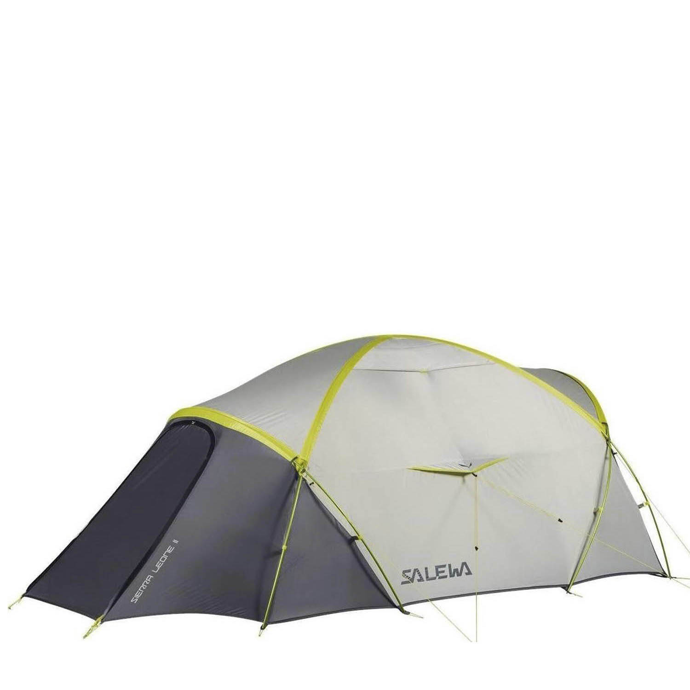
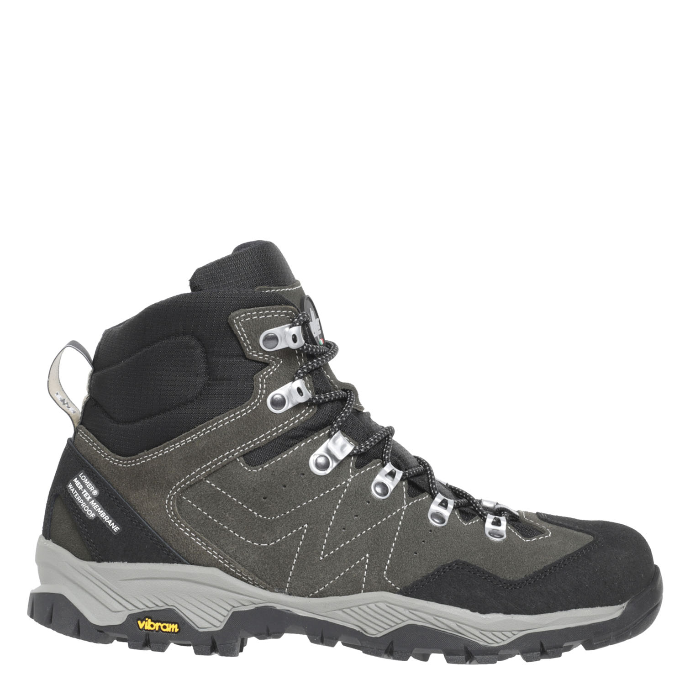
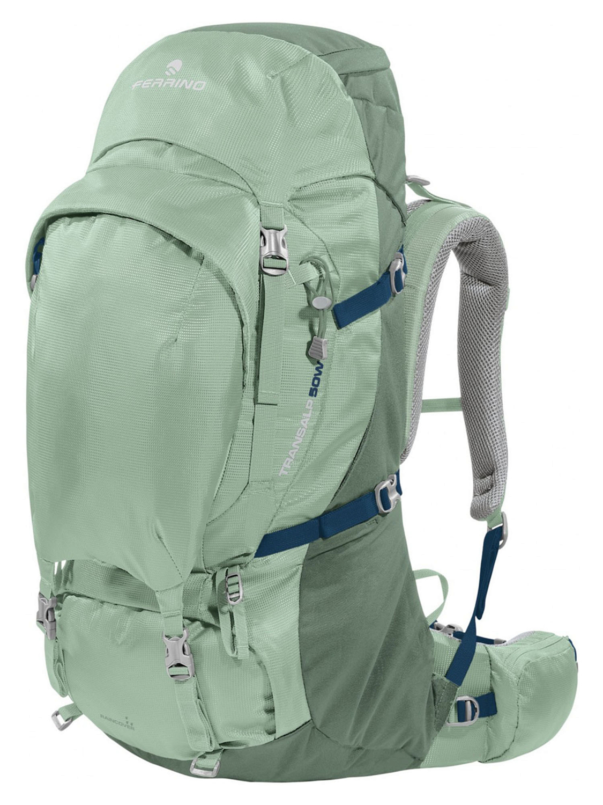

Товары
-

Палатка Salewa Sierra Leone II
Sierra Leone II - двухместная палатка для треккинга в горах и пересеченной местности. Культовая модель от Salewa, выпускаемая уже более 25-ти лет, которая получила ряд улучшений в новом году.
Цена: 52 000 ₽
-

Ботинки Lomer Cristallo 2,0 Mtx Catfish
Ботинки Lomer Cristallo 2.0 Mtx — ботинки для горных походов обеспечивают отличную поддержку, уменьшают вероятность болезненных ощущений и мозолей на ногах и обеспечивают хорошее сцепление со всеми поверхностями.
Цена: 18 000 ₽
-

Рюкзак Ferrino Transalp 50 Lady Green
Ferrino Transalp 50 Lady - это надежный, сверхпрочный и удобный женский рюкзак для многодневных походов и маршрутов выходного дня с комфортом, когда нужно нести дополнительное снаряжение вроде кемпингового кресла или просторной палатки.
Цена: 22 290 ₽